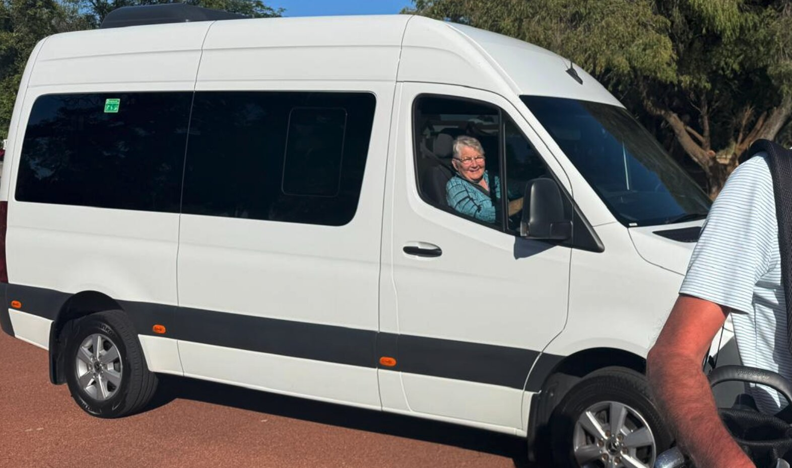
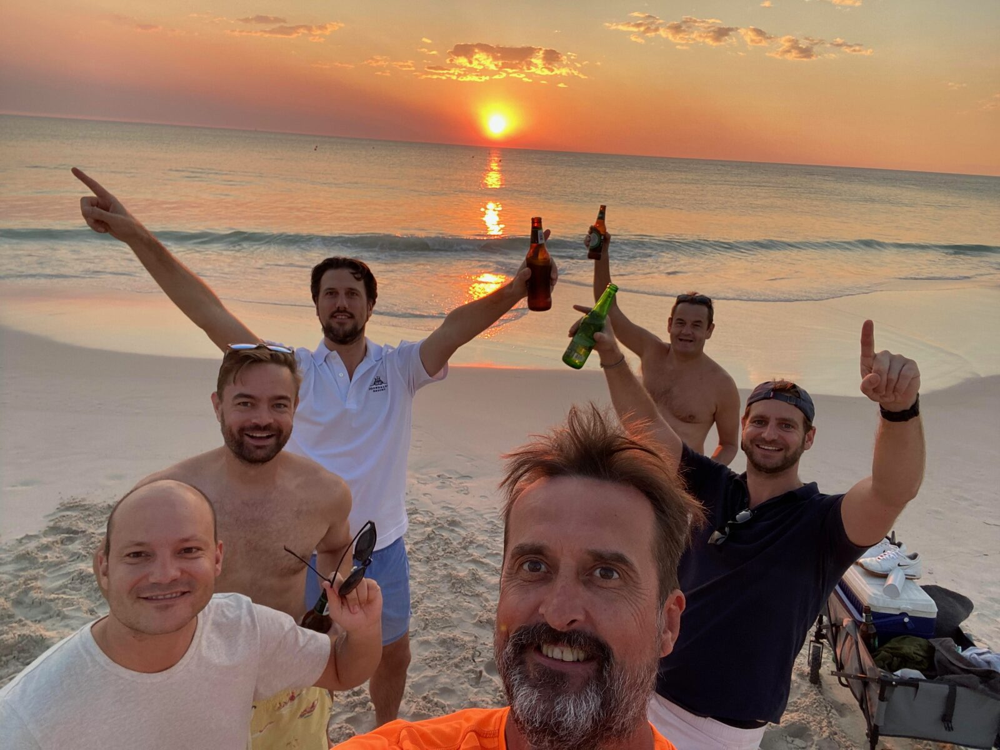
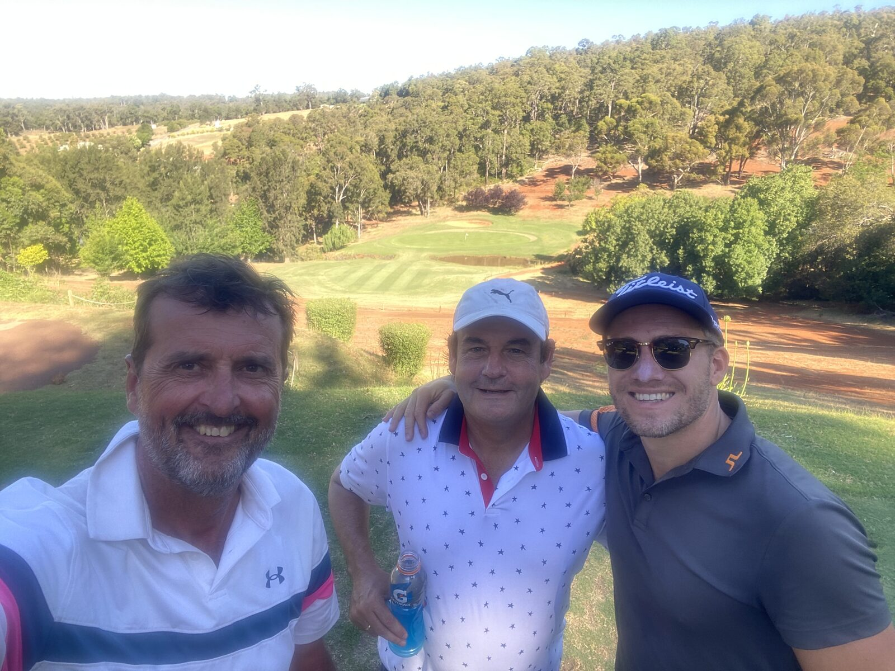
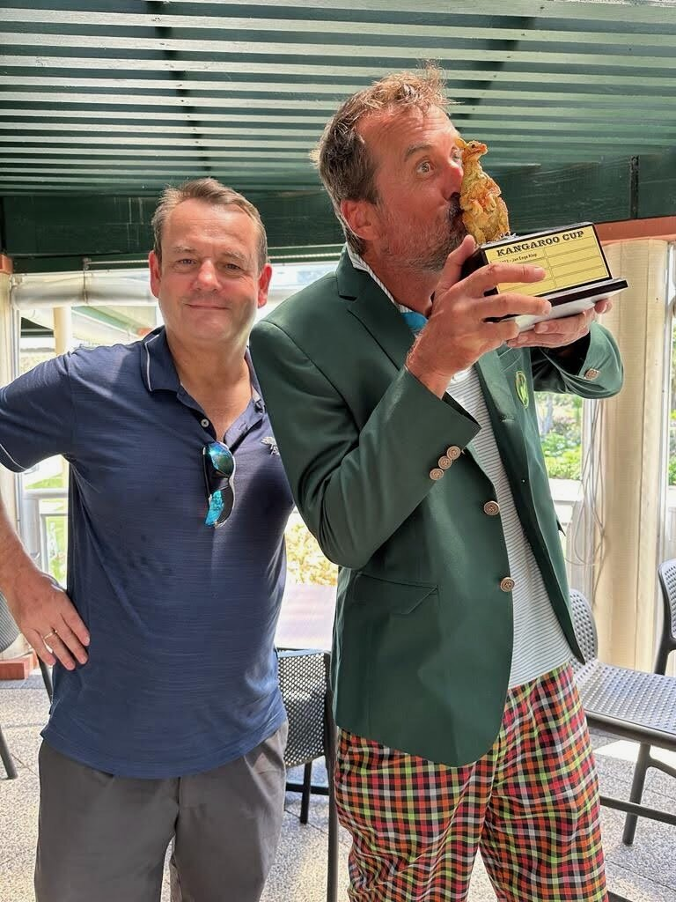
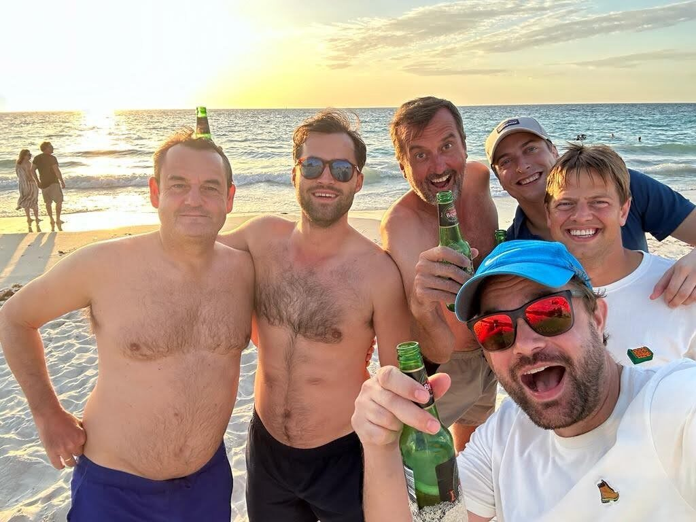
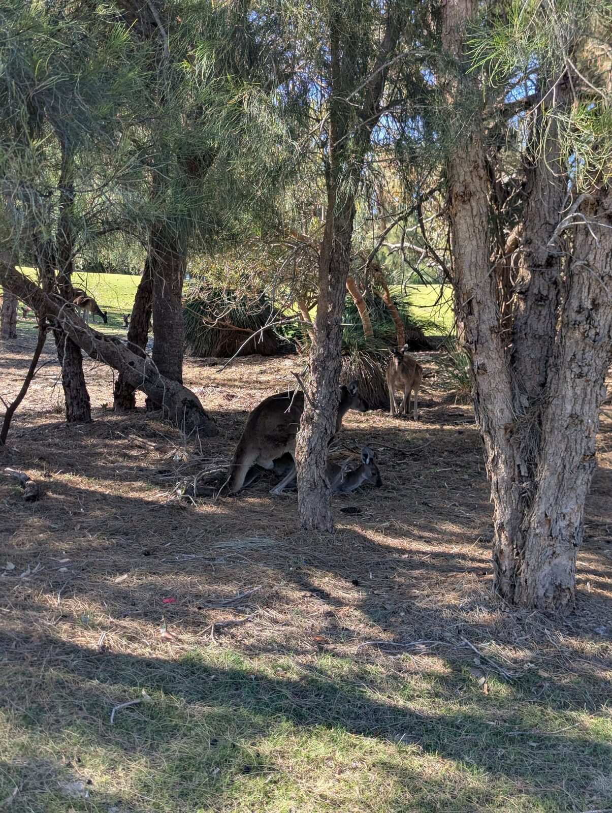

The Kangaroo Cup trophy
The trophy is a precious, custom designed kangaroo statuette, engraved with the names of all winners and glued back together multiple times. He/she/they is handed on to the new champion each year. First played in 2022, the Cup has run every year since.
2026 at a glance
15–18 Oct
Thursday arrival to Sunday departure.
1 Bantry Court
Kallaroo, Western Australia 6025
Courses TBD
Two qualifying rounds + matchplay finals.
Reigning champion
Humberto van den Brok
On the tee in 2026
- Alex van Kampen
- Jan-Eege Klop Winner 2022
- Hinno Fokkema Wurfbrain
- Humberto van den Brok Winner 2025
- Mack Ferguson
- Olaf Bluemke Winner 2024
- Olaf Kwakman Winner 2023
About the Cup
The format has settled into a familiar rhythm: two Stableford qualifying rounds, then a matchplay final between the top scorers with handicap correction, all based out of a share house in Perth's northern suburbs.
Meet Mary

No Kangaroo Cup runs without Mary. She's behind the wheel of the bus for the whole weekend. Dropping the crew at the course each morning, picking everyone up (in whatever state) after a night out and somehow always the happiest person on board no matter how rowdy it gets in the back seats.
Consider this her official Kangaroo Cup welcome: thank you, Mary! See you on the bus in October.
From last year





